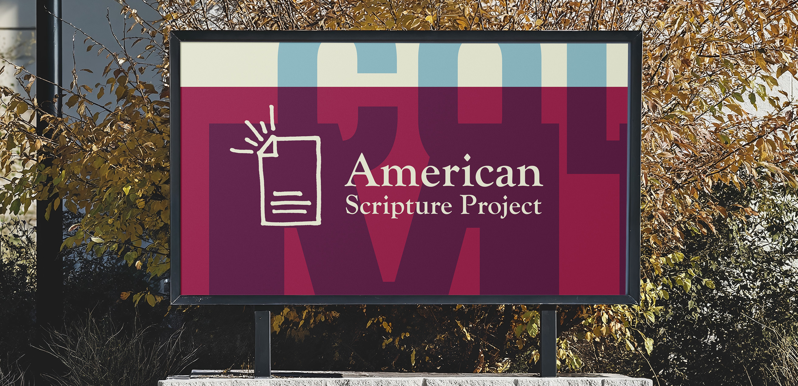
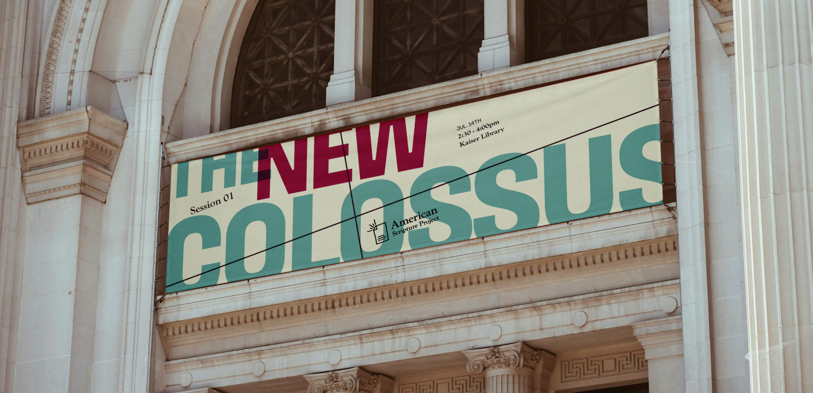

American Scripture Project
Unity through shared experiences
honest
reflective
innovative
pluralist
spiritual
Being part of a community means following a set of moral principles about how to belong, coexist, and cooperate with people of different perspectives and backgrounds. Holding respectful conversations with those who disagree can be uncomfortable, but exploring texts and history opens people up to ideas that help us find common ground.
American Scripture Project is a national curriculum that cultivates civil discourse by using methods of religious text study to investigate historic American texts. The goal is to talk about big issues, unite over the shared experience of being American, and remind us that we are all in this democracy together.
The logo is riddled with iconic symbolism, from the repeated lines of the American flag to the Statue of Liberty’s crown. It is tied together by the lines that emanate from the dog-eared corner, representing how each participant will take away something unique and spiritually impactful.

We drew inspiration from archival immigration paperwork and government forms that include delicate grid lines and excessive stamping . We designed a system of custom stamps with misaligned letters of varying weights and spacings that reference the hasty Ellis Island printing techniques.
When people share perspectives in conversation, they reveal insights that neither party could reach on their own. The overlapping of these ideas in shared space is what creates deeper meaning.

Designing the program handouts with extra white space provides room for participants to write down notes and takeaways, giving each participant a voice in the conversation.
Straight from American Scripture Project, “toxicity [in American society] emerges out of a spiritual brokenness, rather than any intellectual or moral difference about policy or even politics.” Ditto.